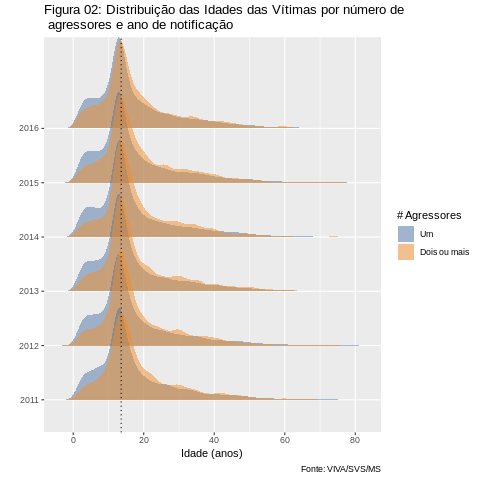

Larissa Sayuri Futino C. dos Santos | 20/10/2018
Quando há mais de um agressor
Crimes de estupro coletivo são continuamente noticiados na mídia1,2,3,4,5,6,7,8,9 sendo mais recentemente de especial repercussão o caso no Rio de Janeiro.
Estupro Coletivo é uma expressão de uso comum para denotar:
Estupro Coletivo: Crime de estupro, cometido com o concurso de duas ou mais pessoas.
Ou seja, diz respeito aos casos de estupro em que há mais de um agressor envolvido. Mais especificamente, a expressão faz referência aos casos em que se aplica o art. 226 do Código Penal.
Toda forma de violência sexual é cruel pois trata o corpo e intimidade da mulher como itens de posse do agressor, pelo prazer e ímpeto de tortura, como cita a Agência Patrícia Galvão. Além disso, segundo o Estatuto de Roma do Tribunal Penal Internacional todo crime de cunho sexual constitui crime de Violência contra a Humanidade. Entretanto, casos de estupro coletivo envolvem mais violência física e maior vulnerabilidade das vítimas para suicídio e desenvolvimento de sintomas psiquiátricos 10,11.
Bem como nos casos de crime com um único agressor, nos casos de estupro coletivo a vítima apresenta vergonha, medo e profunda dificuldade de denunciar o crime, como também pontuado pela Agência Patrícia Galvão. Isso inibe e dificulta a notificação do crime, configurando a chamada sub-notificação já abordada no post Dados oficiais de Estupro no Brasil: A questão da subnotificação. Os estudos de Sarah E. Ullman 10,11 afirmam que em casos de estupro coletivo é mais provável que a vítima procure atendimento e assistência mas a extensão dessa afirmação para a realidade do Brasil é impraticável, uma vez que não há estudo semelhante no contexto nacional.
Esse post estuda alguns aspectos desse tipo específico de estupro. Em todas as análises comparamos as quantidades observadas com as de estupros com um único agressor. Assim, é possível verificar se o número de agressores expõe diferenças nas demais características do crime.
Quantos são?
Mas de quantos casos estamos falando?! Considerando dados do Sistema de Informação de Agravos de Notificação (SINAN) em serviços de saúde do Ministério da Saúde (MS), de 2011 a 2016 temos quantidades relativas às notificações de crime de estupro em mulheres. Os números totais podem ser visualizados na Figura abaixo em que se vê a evolução do número total de notificações de crime de estupro no Brasil (linha amarela) e o percentual deles em que há mais de um agressor envolvido (linha azul).
Notamos claramente o crescimento do número de notificações. Segundo o Atlas da Violência 2018 isso é consequência da expansão e aprimoramento dos centros de referência que registram as notificações como as DEAMs, órgãos que receberam análise específica no post Os Ambientes Especializados no Atendimento à Mulher.
De forma mais gradativa, vemos o aumento do percentual das notificações de estupro coletivo. A diferença entre os valores de 2011 e 2016 alcança dois pontos percentuais (de 12,7% a 14,7%) sendo que o maior valor observado corresponde a 15,6% em 2014. Em números absolutos, o SINAN registrou de 1.318 (2011) a 2.963 (2016) casos de estupro coletivo em mulheres. Logo, vemos que os registros desse crime dizem respeito a um número expressivo de vítimas.

Vítimas
No post Qual a idade das vítimas e onde esses crimes estão ocorrendo? discutimos o perfil das vítimas de estupro segundo a faixa etária. O Gráfico a seguir procura observar se a vítima de estupro coletivo se diferencia quanto à idade da vítima de estupro no caso de um único agressor. Para cada ano da análise, dispomos de curvas representando as idades observadas nos sub-grupos (cores). Essa curvas são representações mais simples de gráficos de barras. O intervalo de idade onde a altura do gráfico está mais alta, representa a faixa etária da vítima com a maior quantidade de notificações.
Vemos que as distribuições das idades das vítimas, por grupo de número de agressores, se assemelham. Basta notar que há grande intersecção entre as curvas. A diferença é perceptível nas partes mais à esquerda das curvas em que vemos mais área azul. Ou seja, como também apresentado no Atlas da Violência 2018 há maior proporção de estupros coletivos contra adolescentes (mulheres com pelo menos 13 anos) e maiores de 18 anos.

Um aspecto social muito relevante diz respeito à etnia (raça) das vítimas. Dado o histórico brasileiro que criou condição de desigualdade entre as etnias observar essa variável pode ser uma forma de avaliar minorias ou grupos de privilégios. É válido lembrarmos que os dados em análise correspondem às notificações de estupro em mulheres, sabemos que o número de ocorrências é muito maior. A etnia de uma pessoa pode ser um dificultador para que a vítima notifique o crime.
Na Figura a seguir vemos gráficos de barras identificando as ocorrências com um único agressor e de estupro coletivo para cada um dos anos de notificação em estudo. A ideia é explorar a composição étnica segundo o número de agressores e em relação ao tempo. A visualização deixa evidente que a maior proporção das etnias é parda e branca, respectivamente, em todos os anos. Também notamos,com mais atenção, que a proporção referente à etnia parda aumenta gradativamente no tempo ao passo que a etnia branca reduz na mesma proporção (cerca de 2 pontos percentuais). Tal fato também é discutido no Atlas da Violência 2018.
Obs.: A etnia amarela foi agrupada à etnia branca dada a sua pouca ocorrência.

Local de Ocorrência
A identificação do local em que o crime de estupro acontece é também fundamental na definição de características do crime. Estas podem auxiliar na concepção de políticas de combate ao estupro. Uma vez que o post Qual a idade das vítimas e onde esses crimes estão ocorrendo? demonstra que os locais mais comuns são residências e vias públicas vamos nos ater com mais atenção a essas duas categorias sendo as demais (bares, áreas de lazer, comércio, escola, etc) agrupadas como outros.
Na Figura a seguir vemos o percentual das notificações de estupro que se deram em residências, vias públicas ou demais localidades em função do tempo para os sub-grupos estupro com um único agressor (azul) e estupro coletivo (amarelo).
Em conformidade com o último post mencionado, vê-se a preponderância do nível residência tanto para estupro com um único agressor (azul) quanto para estupro coletivo (amarelo). Esse fato é um dificultador na notificação pela vítima já que a ocorrência do crime a portas fechadas exclui a existência de testemunhas. Como consequência, citado pela Agência Patrícia Galvão, a notificação se baseia quase que exclusivamente no testemunho da mulher a qual se sabe que está fragilizada e que é costumeiramente desacreditada por agentes públicos.
Outro fato a ser notado é que o percentual de estupros coletivos em vias públicas ou nas demais categorias é mais expressivo em comparação com os estupros com um único agressor.

Relação da vítima com o agressor
A relação da vítima com o agressor elucida os aspectos sociais ou culturais que influenciam a ocorrência do estupro. Por exemplo, a cultura de servir sexualmente o parceiro, como analisado no post Estupros em relacionamentos afetivos, ou a ausência do entendimento de consentimento em uma relação por parte de jovens como também pontuado pela Agência Patrícia Galvão. Sendo assim, quisemos estudar essa variável novamente diferenciando as vítimas segundo o número de agressores.
Na Figura a seguir vemos gráficos de barras para o percentual das ocorrências por ano e diferenciando os casos pelo número de agressores envolvidos. O SINAN dispõe de 16 categorias para descrever a relação social e/ou afetiva da vítima com o agressor. A fim de facilitar a anaĺise fizemos o seguinte agrupamento:
- Se a vítima declarou que o agressor era: conhecido, pai, mãe, padrasto, irmão, filho, madrasta, marido, ex-marido, namorado, ex-namorado, cuidador, outros o agressor é considerado conhecido na nossa análise.
- Em contrapartida, se a vítima declarou que o agressor era um desconhecido ou policial o agressor é considerado um desconhecido na nossa análise.
Dessa forma, em uma situação de estupro coletivo basta pelo menos um conhecido para que o crime seja considerado praticado por um agressor cuja vítima considera familiar.

Vê-se claramente o enorme percentual de casos em que o agressor é conhecido da vítima tanto nas notificações de estupro coletivo quanto nas notificações de estupro com um único agressor. Todavia, o percentual de casos notificados em que não há nenhum conhecido da vítima é claramente superior nas situação de estupro coletivo.
Consequências e sequelas em vítimas de Estupro Coletivo
As possíveis consequências do crime de estupro são severas e devastadoras com efeitos físicos e mentais no curto e longo prazo como observado em pesquisa no estado de São Paulo 12.
A fim de elucidar brevemente o potencial de sequelas nas vítimas finalizamos com uma análise relacionando as probabilidades de desenvolvimento de Estresse pós-traumático, mesmo ciente que a mesma variável foi observada apenas até o ano 2014. Assim como no post sobre Estupro de Vulnerável, vamos utilizar o conceito de razão de chances que, por sua vez depende de quantias que denotaremos por odds.
| # Agressores | Ignorado | Não | Sim | ODDS |
|---|---|---|---|---|
| Um | 0.558 | 0.316 | 0.126 | 0.144 |
| Dois ou mais | 0.564 | 0.28 | 0.156 | 0.185 |
Na razão de chances relacionamos a odds de Dois ou mais com a odds de um agressor. Obtemos então a quantidade 1.285 a qual denota que a chance de uma vítima de estupro coletivo desenvolver Estresse pós traumático é 29% maior que a chance de uma vítima de estupro com um único agressor desenvolver a mesma perturbação mental. Dessa forma, vemos que para a realidade brasileira as consequências e sequelas do crime de estupro coletivo são severas exigindo maior assistência para essa vítima.
Variáveis como essa, que determinam o desenvolvimento de uma possível consequência como decorrência do crime, são fundamentais para o amplo entendimento das sequelas do estupro.
É importante notificar os casos de estupro (opções: ligue 180 ou ir ao centro de saúde mais próximo).
Observações:
Os dados utilizados neste post são oriundos do SINAN - O Sistema de Informação de Agravos de Notificação
Cerca de 1,63% dos dados disponíveis foram descartados por corresponderem a registros em que a vítima não tinha anos de vida completos ou em que não constava o número de agressores envolvidos.
Os dados de 2015 e 2016 não estão consolidados.
Referências
1 Estupro coletivo na Paraíba 2 Estupro coletivo em Pernambuco 3 Estupro coletivo no Piauí 4 Estupro coletivo em São Paulo 5 Estupro coletivo em Minas Gerais 6 Estupro coletivo no Distrito Federal 7 Estupro coletivo no Mato Grosso do Sul 8 Estupro coletivo em Santa Catarina 9 Estupro coletivo no Paraná
10 A Comparison of Gang and Individual Rape Incidents. Ullman, Sarah E. Violence and Victims; New York Vol. 14, Iss. 2, (1999): 123-33. DOI:10.1891/0886-6708.14.2.123.
11 Comparing Gang and Individual Rapes in a Community Sample of Urban Women. Ullman, Sarah E. Violence and Victims; New York Vol. 22, Iss. 1, (2007): 43-51. DOI:10.1891/088667007780482856.
12 Violência sexual: estudo descritivo sobre as vítimas e o atendimento em um serviço universitário de referência no Estado de São Paulo, Brasil. Facuri, Cláudia de Oliveira, et al.. Cadernos de Saúde Pública 29 (2013): 889-898.